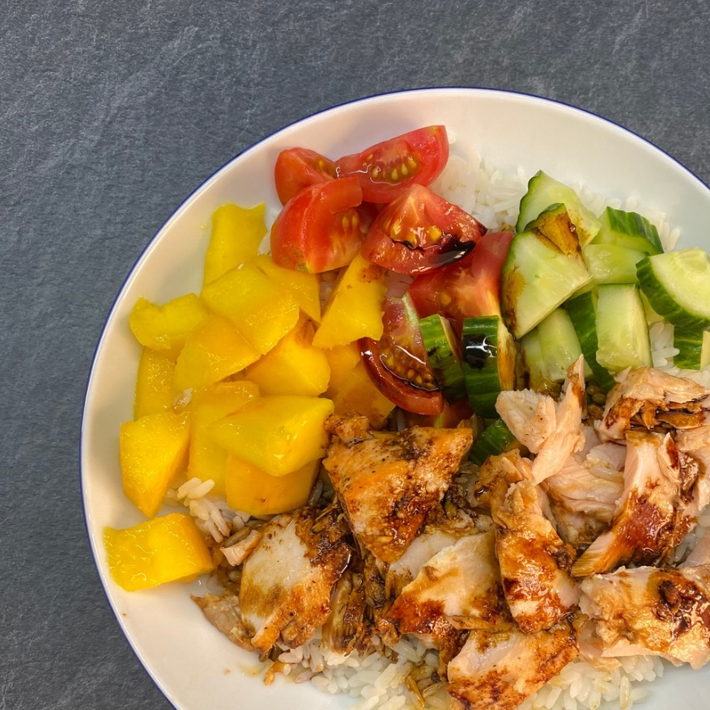

Asijská miska s lososem


Ingredience na 1 porci
- 80 g rýže (v suchém stavu)
- 100 g lososa
- cherry rajčata
- salátová okurka
- mango
- avokádo
- 1 lžíce sójové omáčky
- sezamová semínka
Postup
Rýži propláchnu a dám vařit v lehce osolené vodě dle návodu. Lososa vložím na plech vyložený pečicím papírem, zakápnu olivovým olejem, osolím, opepřím a vložím do trouby rozehřátě na 180 °C. Peču dle tloušťky lososa cca 20-30 minut. Mezitím si nakrájím ovoce a zeleninu. Servíruji zakápnuté sójovou omáčkou a posypané sezamovými semínky.